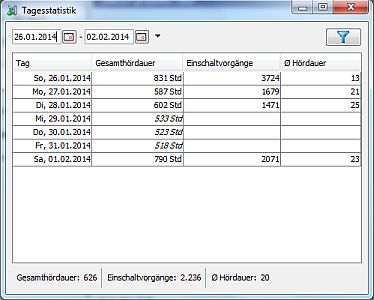

Überblick
laut.fm stellt einige statistische Werte für den Vortag zur Verfügung: Gesamthördauer, Einschaltvorgänge und durchschnittliche Hördauer. Station Admin protokolliert diese Werte mit.
Um die Statistiken vorheriger Tage aufzurufen wähle im Menü .
Filter
Oben kannst Du den Zeitraum auswählen für den die Einträge angezeigt werden sollen. Änderungen werden erst nach einem Klick auf den Filtern-Button rechts wirksam.
Anzeige
In der Tabelle werden - insofern verfügbar - für jeden Tag der innerhalb des gewählten Zeitraums liegt die folgenden Werte angezeigt:
In der Statusleiste unter der Tabelle werden Durschschnittswerte für Gesamthördauer, Einschaltvorgänge und durschnittlicher Hördauer angezeigt.